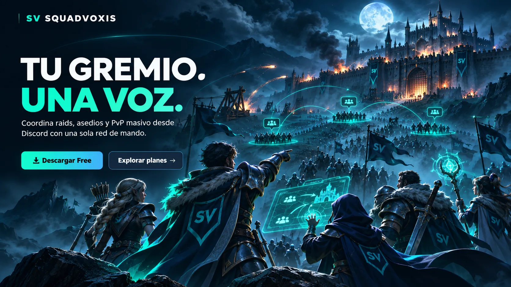
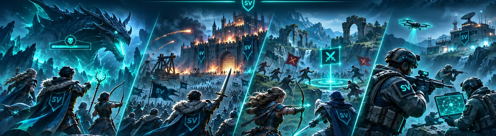
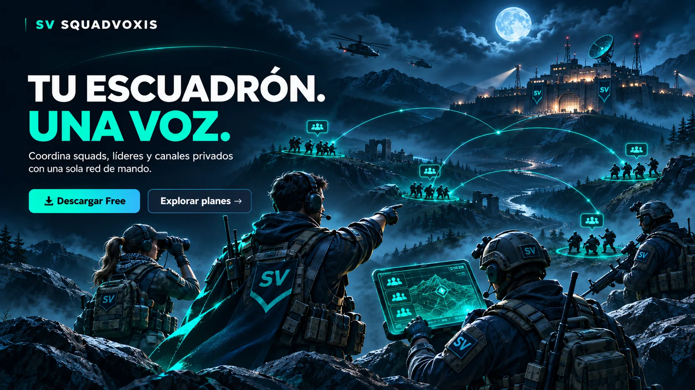
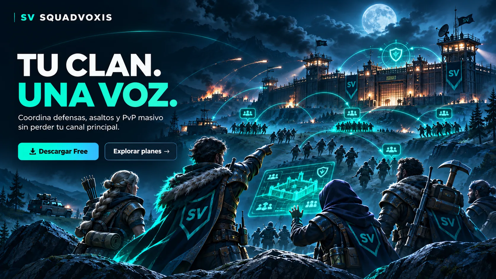

MMORPG
Gremios y raids
Coordina parties, raids, asedios y PvP de gremios.
Una red de mando. Múltiples grupos. Cada equipo conserva su conversación.

Desde los asedios y el PvP masivo hasta la coordinación táctica: conoce las utilidades de SquadVoxis.

Coordina parties, raids, asedios y PvP de gremios.

Conecta mando y líderes manteniendo canales de equipo separados.

Defensas, asaltos y eventos con varios grupos.
Un comandante. Múltiples escuadras. Comunicación táctica en Discord, sin mezclar los canales de tus equipos. Coordina la misión con una sola red de mando.
✓ Gratis para 1 escuadra · ✓ Pago único · ✓ Diseñado para Windows
Los bots retransmiten las instrucciones del comandante mientras cada escuadra mantiene su sala independiente.
El comandante dirige a todas las escuadras sin tener que cambiar de canal.
Las conversaciones de cada equipo permanecen en su propia sala, según los roles que configures.
Configura servidores, canales y retransmisores en una interfaz táctica. Inicia y detén tu red.
Descarga SquadVoxis para Windows e inicia la aplicación.
Selecciona tu servidor y los canales. Asigna a cada usuario el rol que corresponda a su función.
Inicia la retransmisión y coordina las escuadras desde una única red de mando.
Empieza gratis y amplía tu red cuando la necesites. Cada licencia de pago se vincula a un ordenador y requiere conexión periódica para renovar su autorización.
Para probarlo en tu servidor.
Tu primera escuadra ampliada.
Operaciones con varias escuadras.
Para grandes comunidades.
La edición Free permite un retransmisor. Introduce una clave de compra para desbloquear más.
Comprueba los roles y canales de Discord antes de iniciar la transmisión. Los usuarios deben tener asignados los roles correspondientes a su función, con independencia de su nombre.
No. La licencia comprada es permanente; el ordenador renueva una autorización gratuita de 7 días cuando tiene conexión.
Sí. Free permite un retransmisor sin activar ninguna compra.
Consulta el correo de confirmación o la sección My Orders de Lemon Squeezy.
Describe tu problema y adjunta opcionalmente el diagnóstico descargado desde la aplicación. Nunca envíes tokens ni claves completas.